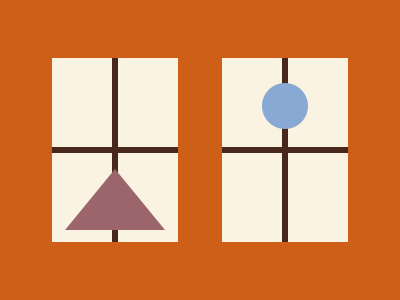

An archive of ordinary days
The small records that become interesting when enough time has passed.

Small records
This fictional archive contains no important occasions. There is a photograph of a kitchen window, a ticket from an uneventful journey, and three sentences about the rain.
At the time, each record seemed too ordinary to keep. A year later, the same details supply the shape of a day that would otherwise have disappeared.
Enough context to remember
A date helps. So does a place, or the name of the person just outside the frame. An archive does not need a grand classification scheme to be kind to its future reader.
We keep things partly because we do not yet know what will matter. The ordinary is not an absence of a subject. It is a subject that asks us to look twice.